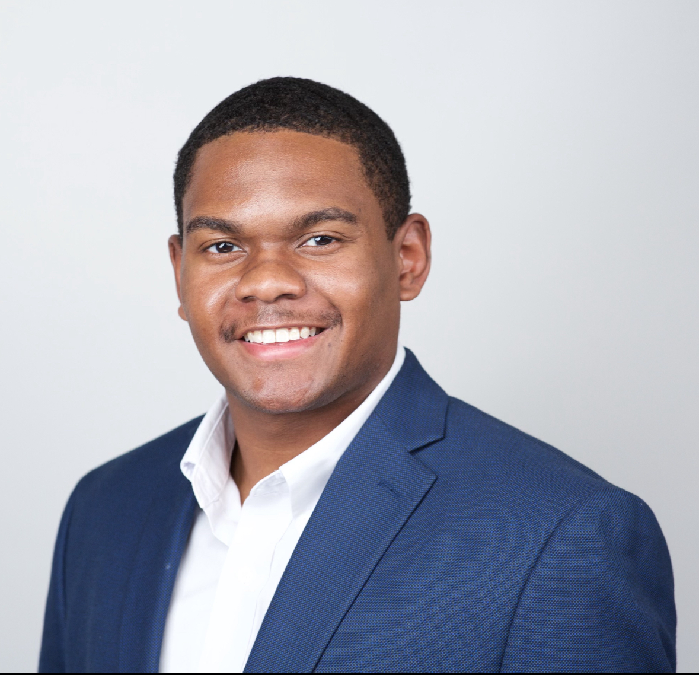

We make vending simple—cashless, reliable, and curated to your team’s tastes.
About Us

Dante Smith
Chief Executive Officer
A Charleston native and Porter-Gaud graduate, Dante earned his B.S. in Finance from The Citadel, where he also played Division I football. Following five years in New York City working across investment banking, credit research, and consulting, he developed a deep understanding of business strategy and financial operations. That foundation inspired his entrepreneurial path and ultimately led him to co-found QuickChoice, where he now serves as CEO — driving the company’s vision, growth, and strategic direction.
Charleston native and Porter-Gaud alum, David graduated from the University of South Carolina. After experiences in medical sales and beginning his commercial real estate career in London, he returned to build QuickChoice with a lifelong friend — focusing on growth through sales and operations.
Transparent reporting, clear restock schedules, and rotating selections based on real demand. We favor dependable service, fast response times, and long-term relationships.